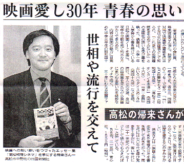
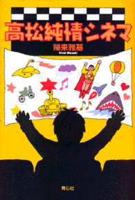

帰来 雅基（きらい まさき）
高松高校48年卒
プロフィール
昭和48年 高松高校卒業
昭和52年 同志社大学商学部卒業
同年 地元高松の企業に勤務
サラリーマンでありながら、映画エッセー「高松純情シネマ」(青心社)を出版し、ラジオ、新聞などでも、映画の案内役として大活躍。

活躍ぶり
見た映画は5000本以上。
そのすべてを映画ノートに記録。
大学の卒論テーマも「日本映画産業の歩み－その歴史的考察と展望－」。
その知識と映画に対する情熱をもとに、会社勤務の傍ら、FM香川の映画情報番組「勝手にシネマニア」(毎週土曜日午後６時から)に出演して、映画のナビゲーターを勤める。
また、平成13年4月から四国新聞で映画のコラムを連載。
右の新聞は、平成13年(2001)3月31日付け四国新聞。エッセー集「高松純情シネマ」が出版されたときの記事です。
著書

映画通としてつとに知られていたため、出版社から、「これまでの映画遍歴をまとめてみないか」と勧められ、平成13年(2001)、映画エッセー集「高松純情シネマ」(青心社)を出版。
内容は、帰来さんの高校と大学時代である1970年(昭和45年)から1976年(昭和51年)までの映画と青春の想い出をつづったもの。
そのうちの一遍である「高松ランオンカンよ永遠に」では、同級生から、「あいつが家におらんかったら必ずあそこにおる」と言われるまで通い詰めたライオンカンに対する熱き思いが語られている。
それにしても、劇場主が客寄せのためにライオンを飼っていたことから「ライオンカン」と名付けられ、その前の道のライオン通りは、そのライオンカンに由来しているなんて知らなかった。
ライオン通りにあるから、ライオンカンというのかと思っていたから。
なお、挿し絵は、同じく高高４８卒の同級生・岡輝人さん。